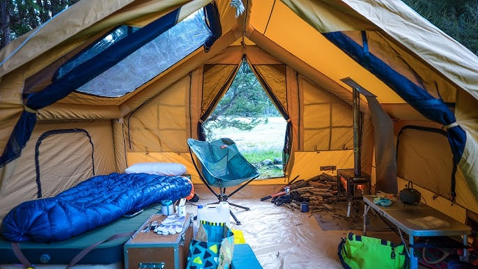

The first thing needed is are knives.A large knife will be needed for hacking and protection. Next a small knife
for day to day operations. As well you will need a skinning blade (we will discuss this in the hunting section) .
a
FIRE STARTER- KonvoySG Carbon Steel Fire Striker. A very good choice. Visit Konvoysg.com
SHELTER- I recommend a good all around tent,known as a "hot tent". "Hot tents" have provisions for a wood stove. This should suffice until a permanent shelter is built.
Wood processing- Chainsaws are great, however they need,fuel,mix oil/bar oil. They need to be sharpened,and spare chains. I recommend an axe to start with.
PACKS- Any number of packs will do. Make sure it fits everything. Packs with metal frames make for even load distribution.
SLED/CART- If you are walking into the woods.
SLEEPING- mats are great ,for long term I would recommend both a cot and a mat. Now your sleeping bag matters,based on weather. Also a blanket will come in handy.
FOOD- Non-perishable food is the best for the start,until you get settled in. "M.R.E.'s may not taste the best, but they will help you survive.

}